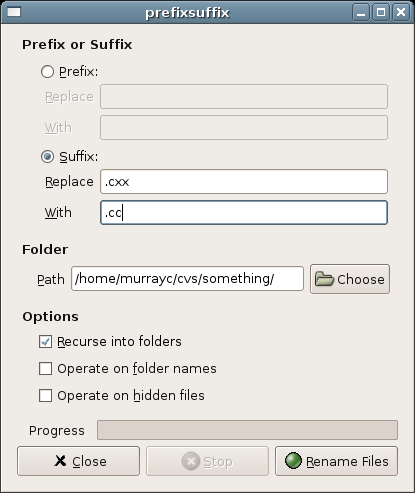

PrefixSuffix is a GUI application that renames batches of files by changing the beginning or end of their names.

You can download PrefixSuffix from here.
The CVS repository, bug tracker, and patch manager are at sourceforge.